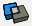

Intern report
2. IFC and tools associated
The Industry Foundation Classes (IFC) file format is maintained by buildingSMART®. IFC provides an interoperability solution between different software applications. The format establishes international standards to import and export building objects and their properties. IFC can be encoded in various formats such as XML, JSON, and STEP, but here I always ues the format .ifc. It is supported by about 150 software applications worldwide. And I tried two applications that can import and export the files, that’s SketchUp and Revit.
2.1. SketchUp
SketchUp, formerly Google Sketchup, is a 3D modeling computer program for a wide range of drawing applications such as architectural, interior design, landscape architecture, civil and mechanical engineering, film and video game design. It is available as a web-based application, SketchUp Free, a freeware version, SketchUp Make, and a paid version with additional functionality, SketchUp Pro.
Here, I use SketchUp Pro, because only the version professional can import and export the IFC file, But SketchUp has a limitation that only recognizes IFC2X3 by default and does not recognize IFC4.
2.2. Revit
Revit is owned by the US AUTODESK company and published in 2002. Revit is specifically designed for building information models (BIM), it is the first software to introduce architectural communities and provide architectural design and document management support. Revit is a powerful CAD product for the Microsoft® Windows operating system.
In the Revit interface, many of the components (such as walls, beams, and columns) are available at the click of a button. You can place these components in the drawing and immediately determine whether they meet your design requirements.
The Revit interface is designed to simplify the workflow. With a few clicks, you can change the interface to better support the way that you work. For example, you can set the ribbon to one of the three display settings for optimum use of the interface. You can also display several project views at one time, or layer the views to see only the one on top.
Autodesk Revit combines the software features of Autodesk Revit Architecture, Autodesk Revit Structure and Autodesk Revit MEP.
-
Revit Architecture's main functions focus on the building’s exterior and interior design and the planning of the furniture or equipment. It can present the furniture or equipment in the architectural space where the design is completed, and can view the building’s exterior and interior landscape from all angles.
-
Revit Structure focuses on structural design and can be used to draw objects such as reinforcements and steel-reinforcements on architectural 3D models.
-
Revit MEP (Mechanical Electrical, and Plumping) is a set of electromechanical system simulation platform tailored for electromechanical engineers to assist them in the design and analysis of power systems.
2.3. Creo
Creo is a family or suite of Computer-aided design (CAD) apps supporting product design for discrete manufacturers and is developed by PTC. The suite consists of apps, each delivering a distinct set of capabilities for a user role within product development.
Creo runs on Microsoft Windows and provides apps for 3D CAD parametric feature solid modeling, 3D direct modeling, 2D orthographic views, Finite Element Analysis and simulation, schematic design, technical illustrations, and viewing and visualization.
After a basic understanding and learning of this software, I found that Creo parametric is a very powerful CAD modeling application, but it is not suitable for our current situation, because it can not import and export IFC files.
The following are the main file types of Creo
-
Creo Files (.prt, .asm, .drw, .frm, .mfg, .lay, .sec, .int, .g, .tmu, .tmz, .cem)
-
Creo View (.ol, .ed, .edz, .pvs, .pvz)
-
Creo Elements Direct (.bdl, .pkg, .sdp, .sda, .sdac, sdpc)
-
etc.
2.4. Comparison
As we known, SketchUp is a traditional modeling software, and Revit is BIM architectural design software, Here are the differences between the two softwares:
-
SketchUp is suitable for quickly building rough body blocks, Revit is suitable for establishing accurate parametric building models.
-
SketchUp uses lines and planes as the basis for drawing, while Revit is based on parameterized building elements such as doors, windows, columns, etc.
-
Revit comes with building analysis, rendering, plotting and other functions, SkecthUp itself is only used for modeling.
SketchUp is mainly used for early concept design. The advantage of SketchUp is that it is quick and convenient. It is very suitable for the early concept plan, And we can use Revit to complete a complete set of architectural drawings, including planes, sections, facades, models, etc., and even construction drawings. Its advantage is the parametric design, even if it is requested to be modified later, it is very convenient, we change one and all others will change.
These two softwares work at different stages and have their own advantages and disadvantages, so different requirements have different choices. For example, in my project, my goal is to convert BIM into a mesh model, so I use SketchUp.
3. Transformation from IFC to computational meshes
3.1. Required tools
3.1.1. MeshKit
MeshKit is an extension for SketchUP who can create a finite element or finite volume mesh directly from SketchUp! and add multiple regions, volumes, boundaries and refinement. It lets you create models in SketchUp and mesh with a number of quality mesh generators, including: Gmsh, Netgen, TetGen, FRGEN3D. It can be download
As we see, this tool consists of 10 parts:
 : Set selected as an region/solid and define Properties. In general, we deifne the 'number', 'name' and 'definement'. In the generated gmsh file, this will be defined as the physical volume
: Set selected as an region/solid and define Properties. In general, we deifne the 'number', 'name' and 'definement'. In the generated gmsh file, this will be defined as the physical volume
: Set selected as a volume (hole). This type of volume will not generate a 3D mesh. In order to define an region or a volume, we must first make group, it can only idendify groups.
: Add tetgen boundary to selected. It should be noted that the selected boundaries must be included in a certain group, otherwise the generated mesh will not define the selected boundaries.
: Set edge properties.
: Add boundary layer.
: Show informatio for selected. This makes it easy to confirm the definition of what we have chosen.
: Export selected to generate mesh. If the generated mesh consists of multiple groups, we need to delete the line 'Compound Volume' before opening it with Gmsh, otherwise it will return an error.
: Import a mesh to SketchUp in 'Medit'(*.mesh) foemat.
: Quick Mesh: mesh the surface of selected group(s) in SketchUP.
: Edit configuration. Before using MeshKit, we have to configure first, because there are different definition options for different mesh generators.
3.1.2. Solid Tools
Solid Tools is a plugin only for SketchUp Pro. With SketchUp’s Solid tools, you can create new shapes by combining or cutting one shape with another, making it easy to model an outer shell or joinery.
SketchUp’s Solid tools work only on SketchUp solids. In SketchUp, a solid is any 3D model (component or group) that has a finite closed volume. A SketchUp solid cannot have any leaks (missing faces or faces that do not meet at an edge).
Tip: To check whether your group or component is a solid entity, context-click it and choose Entity Info. In the Entity Info dialog box that appears, the upper-left corner indicates if the selection is a solid, as shown in the figure.
There is a quick introduction to the Solid tools in the following table:
| Tool | Name | What it dose |
|---|---|---|
Outer Shell |
Leaves only the outer faces of overlapping solids. |
|
Union |
Combines two or more solids into a single form. |
|
Subtract |
One solid removes part of another and is deleted. |
|
Trim |
One solid trims another but remains in the model. |
|
Intersect |
Leaves only the intersecting geometry. |
|
 |
Split |
Splits solids along intersecting geometry. |
Note: The result of an outer shell is similar to the result of a union. However, the result of an outer shell contains only external faces, whereas a union can also contain internal geometry. The following figure shows two square tubes on the left, a union of the tubes in the center, and an outer shell of the tubes on the right.
To find the Solid Tools, look in the following parts of the SketchUp interface:
-
Solid Tools toolbar
-
Tools menu (Select Tools > Outer Shell or Select Tools > Solid Tools and select the other tools from a submenu)
-
Tool palette (macOS)
Components are like groups, but when we make an edit to a component, those changes are reflected in all other copies of that component. When we use Solid tools on components, the component definition is actually never altered. All the other copies of that component won’t change either. What actually happens is the component instance is deleted and replaced by a new group containing the results of the Solid tool action.
3.2. Specific operations
Here is a simple example of IFC to mesh with SketchUp.
-
Launch the SketchUp application.
-
Select File > Import, change the Format to IFC Files (.ifc, *.ifcZIP), select the file you want and click *Import.
-
Verify th Import Results and click OK.
The model is made up of many IFC components, We need to split it into the lowest level components to edit. For example, ifcProject > ifcSite > ifcBuilding > ifcBuildingStoray > ifcRoof, ifcSlab, ifcWallStandardCase, ifcDoor, ifcWindow, ifcRailing, ifcStair, etc.
The next part is to explain in detail how to convert IFC into a mesh. I am doing it according to different types. I divide these elements into two categories: materials and boundaries.
3.2.1. Materials
First of all, I am going to talk about materials, including interior walls, interiors doors and air in this example.
-
(OPtional) Select all components with the type ifcWallStandardCase that represent the interior wall, rirht click and select Lock, Hide the rest and then Unlock.
-
Select a component and verify it is a solid component.
-
Right click and select Explode, then right click and select Make Group, also verify it’s a solid group.
-
Do the same things for the rest interior walls.
-
If the component or group is not solid, use the tools such as Rectangle, Line,Push/Pull, etc. to create a solid group that is identical to the original component or group.
-
(Optional) Select all solid groups and click Outer Shell under the palette of Solid Tools.
-
Set selected as an smesh region "interior-wall"and define properties by MeshKit.
The same as internal walls.
For this material, We need to create many real groups that contain all the space except the interior walls and doors, then combine them by Solid Tools. At last, we also set it as an region "air".
3.2.2. Boundaries
Generally, the wall is thick, but in this case, we just consider it as a surface, so I built the surfaces that has the same dimensions as the original component, Make Group and define it by MeshKit
The same as exterior walls.
In the IFC file, this house has heater, but our numerical simulation needs it, So I manually added them under the windows of each room.
-
Selext the "air" where you need to add heater, right click and select Hide.
-
Use Rectangle, Push/Pull and other tools to build a cuboid, and Make Group.
-
Rebuild a cuboid on the basis of the first cuboid as our heater.
-
Remove the first cuboid.
-
Select all surfaces of the heater and define it.
-
Unhide the air we by "Edit > Unhide > Last/All*
3.2.3. Mesh
After the materials and boundaries are ready, I will generate a geometry. Before generating the geometry, we have to check that all surfaces and volumes are well-defined and show all hidden parts.
-
Select all the objects we need and export to generate a mesh in format .geo.
-
Open the .geo file with application Gmsh and verify that it can successfully generate the 3D mesh.
After generating the .geo file, we need to open and edit it, because MeshKit has some options that are default, but the default options may not be suitable. For example, it combines all the volumes, but Gmsh does not accept. Its default mesh options are as follows, we can modify it before opening it with Gmsh, or change it later via Tool > Options > Mesh > General.
Coherence;
Mesh.Algorithm = 6;
Mesh.Algorithm3D = 1; // Delaunay3D, works for boundary layer insertion.
Mesh.Optimize = 1; // Gmsh smoother, works with boundary layers (netgen version does not).
Mesh.CharacteristicLengthFromPoints = 1;
// Recombine Surface "*";
Mesh.RemeshAlgorithm = 1; // automaticThen we generate 2D mesh and 3D mesh, then verify that all parts are working well and meeting the requirements by using Tools > Visibility and Tools > Clipping.
The following figures are the original IFC, the modified geometry and the generated mesh.
3.3. Difficulties involved
In the beginning, I can’t always generate a 3D mesh, but after watching the sample video on the web and doing countless comparisons, I found that I had to define region which is the physical volume in the geo file. and set the specific properties.
Through use, I found that SketchUp prefers to draw rectangles and lines instead of curves.When I draw a circle, it is actually a polygon with a lot of sides. In the building, some walls are designed to be curved, which makes it difficult for us to copy an identical figure based on the original graphics. I can use a stupid way to use Solid tools to combine the group who have the desired face with the outer shell, then double-click to edit the group, erase or remove the unwanted parts. But there are a lot of restrictions on this method, because Solid tools can only process entities solid, so if there is a group or component that is not solid, then we can’t do it. Later, after trying, I found a simpler way, I can copy and paste to get the desired surface, and move it to the desired place or use paste in place directly, then continue.
At the beginning, I was not very familiar with SketchUp. It was difficult for me to work in a closed group until I found the tools: Hide and Lock.
For IFC, its components are made up of many triangles, which makes us very troublesome to re-edit the components. For example, if I want to push and/or pull a surface, I need to operate on each triangle that makes up the surface. Not to mention, it is easy to miss or misuse a certain part. In addition, after converting the components into groups and generating a mesh, there will be many unnecessary points, making the geometry less intuitive and it also affects the operation of the geo file. For example, a cube is composed of eight vertices and twelve edges, but when it is composed of triangles, it consists of at least eight vertices and eighteen edges, which makes us look for one of them. The work of one of the faces has changed from one in six to two or more in the twelve, which greatly increases the complexity of the work.
n this regard, we can simplify the graphics by removing some extra lines, but the operability of this method is not strong. When a face is composed of twenty or more triangles, you will feel desperate. Until I found Solid tools, it became much simpler, because after the component was processed by Solid tools, its component definitions were deleted and replaced with groups, and it was the best combination, which saved some trouble. It is easy to lose a part after using the Explode to disassemble the component and then regenerate the group.
In addition, in SketchUp, various groups/components can be overlapped. In order to generate the correct geometry later, we can use the Trim tool in Solid tools.
In summary, we can see the importance and practicality of the Solid tools plugin. For our entire work, without it we can also use some basic editing tools to complete the requirements, but it will add a lot of complexity and uncertainty. But this plugin was actually discovered by chance after I used SketchUp for a long time. After discovering its powerful features, I never forgot to use it. This incident gave me an inspiration, that is, when learning to use the same new application, in addition to watching the official use of the tutorial, we should try more and find more hidden but useful features.
Of course, there are still some troubles that are not easy to solve. For example, when defining the air, when our internal structure is slightly more complicated, it will be very troublesome and error-prone when creating this group. I also tried to use the group inclusion relationship to deal with. For example, build a large real group based on all external walls, and then define the walls and doors as subgroups, but the geometry generated in this way cannot generate 3D mesh, always return an error, I don’t know why. I also used this method when building heating, and found that sometimes it can be successful, sometimes it is wrong, I hope Gmsh will improve in the subsequent update, enhance its stability.
In addition, for Gmsh to generate a grid, when we reach a certain size or complexity, the default 3D algorithm is no longer suitable, Gmsh will flash back, in fact, this problem is not easy to solve, it is out there. There is no hint at the problem. I found out that it is a problem with the 3D algorithm after many attempts and comparisons.
3.4. Use of Salome
It is possible to use FreeCAD and Salome to produce a mesh from an IFC file. We use FreeCAD to open the IFC and export it to the brep format, which can then be used in Salome.
To enable the IFC format in FreeCAD, we need to install IfcOpenShell by downloading the python module and installing it in a place where FreeCAD can use it.
Such places can be determined by typing import sys and print sys.path in the console of FreeCAD.
Then, using the Part workbench, you can import your IFC file.
And after selecting the objects you want, you can export them in the BREP file format.
You can use the python script ifc2salome to load the brep and create the necessary objects.
First the script import the brep file, you need to give the proper path.
AFC_brep_1 = geompy.ImportBREP("/media/sf_SharedFolder/AFC.brep" )Then, we extract all the solids of the brep and make a partition in order to have a geometry with no space and correct connection between elements, since the IFC format does not ensure it..
listSolid1 = geompy.ExtractShapes(AFC_brep_1, geompy.ShapeType["SOLID"], True)
Partition_1 = geompy.MakePartition(listSolid1, [], [], [], geompy.ShapeType["SOLID"], 0, [], 0)We also need to create the different volumes corresponding to the air of each room. For this, we create the bounding box of the geometry and make a cut with the partition done previously. We then extract all the subshapes, corresponding to the air of the rooms but also to the air between the exterior walls and the bounding box.
Bounding_Box_1 = geompy.MakeBoundingBox(Partition_1, True)
[Shell_1] = geompy.ExtractShapes(Bounding_Box_1, geompy.ShapeType["SHELL"], True)
Solid_69 = geompy.MakeSolid([Shell_1])
Cut_1 = geompy.MakeCutList(Solid_69, [Partition_1], True)
listAir = geompy.SubShapeAllSortedCentres(Cut_1, geompy.ShapeType["SOLID"])In order to keep only the volumes corresponding to the air of the rooms, we will compute the center of mass of each solid in the geometry (the walls,…).
cmSolid = []
for s in listSolid1:
cm = geompy.MakeCDG(s)
cmSolid.append(geompy.PointCoordinates(cm))Once we have the center of mass of every walls, we also compute the center of mass of each air volume, and check if its position is inside the bounding box of the centers of mass of the walls. This is probably not perfectly robust, and it will not work if the geometry is not closed.
listAir1 = []
i = 0
dArray = [1,-1] # before or after direction
xyzArray = [0,1,2] # direction x y and z
for a in listAir:
cm = geompy.MakeCDG(a)
cmcoords = geompy.PointCoordinates(cm)
isInAll = True
for xyz in xyzArray:
for d in dArray:
isIn = False
for c in cmSolid:
isIn = isIn or d*cmcoords[xyz] < d*c[xyz]
isInAll = isInAll and isIn
if isInAll:
listAir1.append(a)
geompy.addToStudyInFather( Cut_1, a, 'Air_'+str(i))
i += 1Finally, we have the create a new partition with the air and the walls.
Partition_2 = geompy.MakePartition([Partition_1] + listAir1, [], [], [], geompy.ShapeType["SOLID"], 0, [], 0)
listSolid2 = geompy.ExtractShapes(Partition_2, geompy.ShapeType["SOLID"], True)After the use of the script, we should have a geometry containing all the walls and the air of the rooms. We now need to create a mesh from it. For this we use MeshGems since it is robust enough to create a comform mesh. In order to be able to impose boundary conditions, we also need to extract the relevant faces of the mesh (window, door, …) and create a group for each so there is a marker in the final mesh.